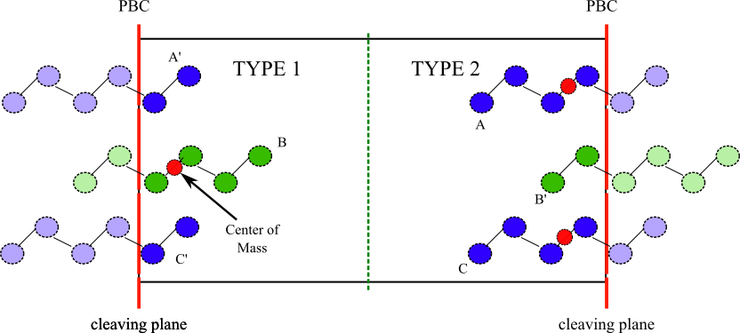

pair_style coul¶
pair_style coul/dsfsql args
pair_style coul/dsfcubl args
pair_style coul/dsfNl args
args=list of the possible arguments
<name pair style> args = alpha cut-off lambda i_IDflag orientation N
alpha = damping parameter (inverse distance units)
cutoff = global internal cut-off
lambda = global scaling of the potential
i_IDflag = new (integer) property to be added to the atoms
orientation = direction perpendicular to the cleaving plane
N = for <coul/dsfNl> only, power of the polynomial for $\lambda$
pair_coeff accepts only the following arguments
pair_coeff a b lambda
where
a = atom of type a [mandatory]
b = atom of type b [mandatory]
lambda = global scaling of the potential
This pair style is derived from the coul/dsf in LAMMPS and we refer to the LAMMPS documentation for the
description of its main features. Here, only the modifications needed for the cleaving calculations
will be considered.
The cleaving of a molecular system (e.g., the mannitol) requires some modifications with respect an atomistic system due to the fact that molecules have a finite extension which can cross the cleaving plane. In the calculation of the SFE, the internal bonds of a molecule cannot be broken and therefore we cannot use the implicit rule that any atoms on one side of the cleaving plane are “different” from the atoms on the other side. This property must be added to the atoms as an additional property using the LAMMPS command fix property/atom
The cleaving plane are chosen to be the boundary of the box in one of the three orthogonal directions.
Warning
At the moment, the cleaving plane can not be placed arbitrarily within the box, but must always coincide with one of the periodic boundary (either on the \(x\), \(y\), or \(z\) direction)
Each atom receives a molecule type based on the position, with respect the center of the box, of the Center of Mass (COM) of the molecule to which belongs. This is shown in the next figure

Warning
In this procedure, it is assumed that the molecules near the cleaving plane (e.g., molecules A and C in the previous figure) interacts with molecules on the other side of it (e.g., molecule B) only through the cleaving plane. That is to say that the cut-off of the pair interactions is smaller than the separation between (e.g.,) A and B measured within the box.
The pair_style is able to tell, based on the atom position and i_flag if an interaction between a couple of atoms needs to be rescaled by \(\lambda\). An application of this procedure can be found in Di Pasquale and Davidchack1.
- 1
Nicodemo Di Pasquale and Ruslan L Davidchack. Cleaving method for molecular crystals and its application to calculation of the surface free energy of crystalline β-d-mannitol at room temperature. The Journal of Physical Chemistry A, 126(13):2134–2141, 2022.